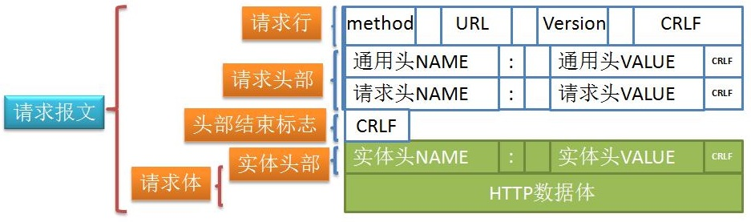
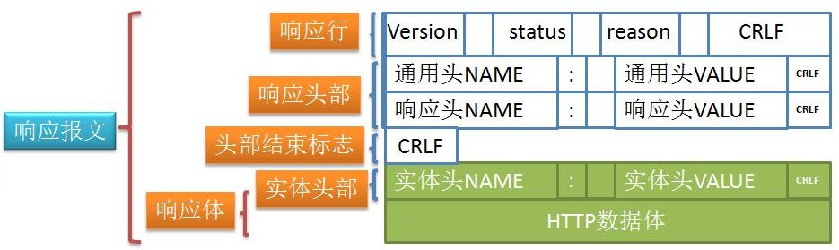

透彻理解Java网络编程（三）——HTTP协议
HTTP协议，即Hyper Text Transfer Protocol（超文本传输协议），属于TCP/IP协议模型中的应用层协议，也是最常见的协议。比如，我们通过浏览器访问网页，本质就是通过HTTP协议获取网页内容。
HTTP协议是一种无状态的请求/响应协议，它的底层还是通过TCP协议来建立连接的。本章，我将会对HTTP协议的报文结构、通信原理进行讲解。
一、报文结构
客户端发送一个HTTP请求到服务器，请求报文的格式如下，一共由四个部分组成：
- 请求行（request line）；
- 请求头部（header）；
- 空行；
- 请求体数据。

服务端的响应报文也由四个部分组成：
- 状态行；
- 响应头部（header）；
- 空行；
- 响应体数据。

1.1 请求类型
HTTP 协议 一共定义了八种请求类型，通过请求行中的method标识：
- OPTIONS：返回服务器针对特定资源所支持的HTTP请求类型，也可以利用向服务器发送
*的请求来测试服务器的功能性； - HEAD：向服务器索要与GET请求相一致的响应，只不过响应体将不会被返回，这一方法可以在不必传输整个响应内容的情况下，就可以获取响应消息头中的元信息；
- GET：向特定的资源发出请求；
- POST：向指定资源提交数据进行处理请求（例如提交表单或者上传文件）；数据被包含在请求体中，POST请求可能会导致新的资源的创建和/或已有资源的修改；
- PUT：向指定资源位置上传其最新内容；
- DELETE：请求服务器删除 Request-URI 所标识的资源；
- TRACE：回显服务器收到的请求，主要用于测试或诊断；
- CONNECT：HTTP/1.1 协议中，预留给能够将连接改为管道方式的代理服务器。
事实上，最常使用的请求类型也就POST和GET，两者的主要区别和联系如下：
- GET 用于信息获取，应该是安全和幂等的；
- GET 是会被浏览器主动缓存的，如果下一次传输的数据相同，那么就会返回缓存的内容；
- GET 方法的 URL 一般都具有长度限制，HTTP协议本身并未规定GET请求的长度，这个长度限制主要由浏览器和Web服务器决定；
- GET 只产生一个TCP数据包，浏览器会把请求头和请求数据一并发送出去；
- POST 表示可能修改变服务器上资源的请求，因为有可能修改服务器上的资源，所以它不符合安全和幂等性；
- POST 方法的请求信息放置在请求体中，所以请求信息是没有长度限制的；
- POST 方法会产生两个 TCP 数据包，浏览器会先将请求头发送给服务器，待服务器响应100 continue，浏览器再发送请求数据，服务器响应200。
幂等性(Idempotence)：指无论调用这个URL多少次，都不会对服务端产生不同的结果影响。
1.2 状态码
所有HTTP响应的第一行都是状态行，依次是当前HTTP协议版本号，3位数字组成的状态代码，以及描述状态的短语，彼此由空格分隔。
状态代码的第一个数字代表当前响应的类型：
- 1xx消息——请求已被服务器接收，继续处理；
- 2xx成功——请求已成功被服务器接收、理解、并接受；
- 3xx重定向——需要后续操作才能完成这一请求；
- 4xx请求错误——请求含有词法错误或者无法被执行；
- 5xx服务器错误——服务器在处理某个正确请求时发生错误。

1.3 协议版本
HTTP协议的发展经历了几个阶段，每个阶段对应不同的协议版本：
- http 1.0：http 1.0默认是短连接，即每次请求都要重新建立一个TCP连接，处理完就释放TCP连接。如果需要使用持久连接，则需要显式声明
keep-alive； - http 1.1：http 1.1默认支持长连接，不需要显式声明
Connection: keep-alive，底层的TCP连接会一直保持，所有HTTP请求都会基于同一个TCP连接；同时，HTTP 1.1版本引入了Cookie机制； - http 2.0：支持多路复用，基于一个TCP连接并行发送多个请求以及接收响应；HTTP1.1在同一时间对于同一个域名的请求数量有限制，超过限制就会阻塞请求。而多路复用机制底层采用了"增加二进制分帧层"的方法，在不改变原来的语义、首部字段的情况下提高了传输性能，降低延迟。
所谓二进制分帧，是指将所有传输信息分割为更小的帧，用二进制进行编码，多个请求都在同一个TCP连接上完成，可以承载任意数量的双向数据流。

二、HTTPS原理
HTTP协议中的报文传输都是明文的，没有加密，所以在互联网环境中存在安全性风险，于是出现了HTTPS协议。
HTTPS是一种安全通信传输协议，依然基于HTTP进行通信，但是利用了SSL/TLS建立安全信道，加密数据包，提供对网站服务器的身份认证，同时保护交换数据的隐私与完整性。
注意：TLS是传输层加密协议，前身是SSL协议，由网景公司1995年发布，有时候两者不区分。TLS/SSL 的功能实现主要依赖于三类基本算法：散列函数 、对称加密和非对称加密，其利用非对称加密实现身份认证和密钥协商，对称加密算法采用协商的密钥对数据加密，散列函数用于验证信息的完整性，防止篡改。
HTTPS的工作原理，可以用下面这张图表述：

整体流程如下：
- 浏览器请求HTTPS域名，同时携带自己支持的加密规则给目标网站；
- 网站从客户端支持的加密规则中，选出一套对称加密算法和Hash算法，然后把自己的身份信息用证书的方式发回给浏览器，证书里包含网站地址、加密公钥、证书颁发机构等；
- 浏览器验证证书的合法性，接着用约定好的对称加密算法生成一串随机数密码，然后用证书中的公钥对该对称密钥进行加密；
- 浏览器用约定好的Hash算法计算握手消息并生成一串Hash值，然后用对称密钥加密握手消息+握手消息Hash值，并一起发送给网站服务端；
- 网站用私钥对消息解密，获取对称密钥，然后用对称密钥解密握手消息，获取到握手消息及其Hash值；接着，用Hash算法对握手消息进行一次Hash，并比对客户端上送的握手消息Hash值，一致则说明消息没有被篡改；
- 然后，网站用对称密钥加密一段握手消息——握手消息+握手消息Hash值给客户端；
- 客户端用对称密钥解密并计算握手消息的Hash值，如果与服务端发来的Hash值一致，则握手过程结束，之后所有的通信将由双方协商好的对称密钥加密通信。
三、总结
本章，我对HTTP协议的报文结构和原理进行了讲解。HTTP协议是一种应用层协议，其底层本质还是基于TCP协议进行连接和通信。